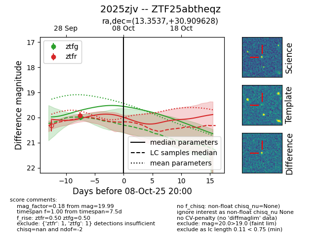
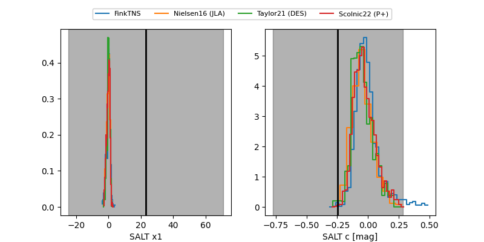

FINK: ZTF25abtheqz
Lasair: ZTF25abtheqz
ALeRCE: ZTF25abtheqz
TNS: 2025zjv
YSE: 2025zjv
ZTF25abtheqz (ztf,fink)
2025zjv (tns,yse)
equatorial (ra, dec) = (13.3537,+30.90963)
galactic (l, b) = (123.4317,-31.96020)


last ztfg=19.99, ztfr=19.93
1 ztfg, 1 ztfr detections